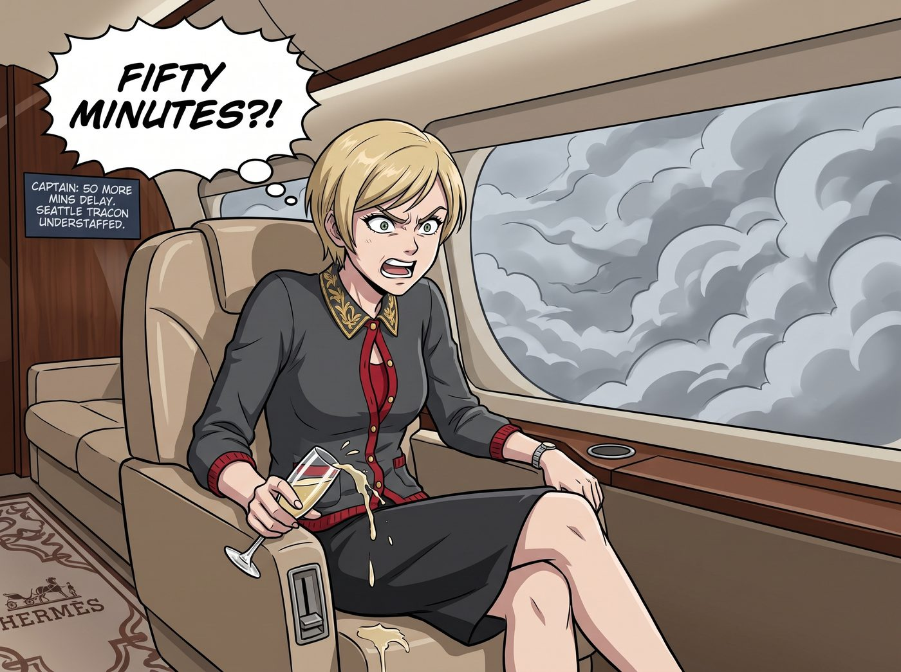
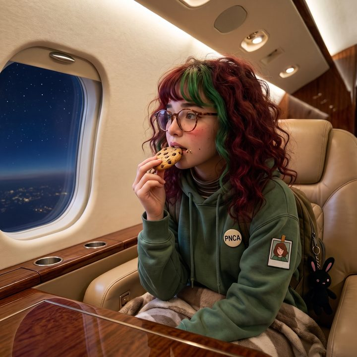

空中合規演習


灣流 G650 私人飛機在西雅圖塔科馬上空的厚重灰雲中，已經像一隻迷失的無頭蒼蠅一樣，畫了整整四十五分鐘的「8」字型盤旋。
機艙內的廣播傳來機長無奈的聲音：「Chase 小姐，非常抱歉。西雅圖進近管制中心（TRACON）目前嚴重人手不足，兩名當班管制員突發腸胃炎請假。塔台要求我們在普吉特海灣上空繼續盤旋等待，預計還需要……五十分鐘才能獲得降落許可。」
「五十分鐘？！」Victoria 手裡的香檳差點灑在愛馬仕地毯上，名媛的怒火瞬間被點燃，「我是花了一萬五千美金一小時包機來天上兜風的嗎？！告訴塔台，如果他們現在不讓我降落，我明天就買下他們工會的養老基金然後全部拋售！」
「冷靜點，大富婆。買下基金也沒法讓飛機現在降落。」Chloe 無聊地在真皮座椅上轉來轉去，轉頭看向正在看書的 Max，「喂，Maxine，妳能不能倒轉個一小時？我們換個機場降落？」
「我拒絕為這種『非致命性通勤延誤』流鼻血。」Max 翻了一頁書，語氣平靜，「而且就算回到一小時前，塔台的人手依然不夠。這是一個結構性的勞動力短缺問題，不是時空問題。」
就在這時，坐在後排的實習生 Lily 合上了她的稅務法規書，推了推圓框眼鏡。
「機長先生，」Lily 按下機艙對講機，聲音依然是那種令人如沐春風的軟糯，「請問您能把無線電調到西雅圖進近管制的頻率，並對我開放單向監聽權限嗎？」
「Uh... 可以是可以，但小姑娘，未經美國聯邦航空總署（FAA）授權，任何人干擾空中管制都是嚴重的聯邦重罪。」機長好心地提醒。
「請放心，我絕對不會碰無線電麥克風。」Lily 露出一個純潔無瑕的微笑，「物理接管塔台是不合法且極度危險的。但我可以作為一名『熱心的航空合規監察員』，為他們提供一點行政上的場外援助。」
兩分鐘後，Lily 透過飛機的 Wi-Fi 網路，打開了她的黑色筆記本電腦。
一、 實習生的「場外行政調度」
她沒有駭進任何雷達系統，也沒有試圖與天上那些焦頭爛額的飛行員對話。她只是打開了三個公開網頁：FAA 的值班表公示系統、LiveATC（即時航空無線電監聽網站），以及西雅圖國際機場的管理層架構圖。
「找到了。」Lily 雙手飛快地敲擊鍵盤，眼神中閃爍著冰冷的數據光芒，「今晚西雅圖 TRACON 的值班經理叫 Robert Higgins。他現在正因為手下缺人，導致空域內積壓了二十二架飛機而面臨崩潰。」
Lily 拿起手機，直接撥通了一個隱藏在厚重官僚網頁最深處的直撥號碼。
電話響了三聲被接起，對面傳來一個男人極度暴躁的吼聲：「這裡是值班經理 Higgins！我現在沒空處理任何非緊急……」
「晚上好，Higgins 先生。我是 Chase 財團航空合規與安全防禦小組的 Lily。」
Lily 的聲音溫柔得像一杯熱牛奶，卻讓周圍的溫度瞬間降到了冰點。
「我剛才透過公開頻道監聽，並交叉比對了您目前的雷達扇區流量。我極度震驚地發現，貴中心 4 號扇區的單一管制員，目前正在同時引導 15 架中大型客機。根據《聯邦航空法規（14 CFR Part 65）》以及您與全國空中交通管制員協會（NATCA）簽訂的疲勞管理協議，這已經嚴重超出了『紅色危險閾值』的 30%。」
電話那頭的吼聲戛然而止，只剩下粗重的喘息聲：「妳……妳是誰？妳想幹什麼？！」
「我不想幹什麼，我只是一個關心美國航空安全的熱心市民。」Lily 微微歪頭，大眼睛裡閃爍著無辜的光芒，「但我已經起草好了一份長達 32 頁的《關於西雅圖進近管制中心系統性忽視疲勞駕駛與危及公共安全》的檢舉報告。收件人包括美國國家運輸安全委員會（NTSB）、聯邦督察長辦公室，以及西雅圖時報的首席調查記者。」
「聽著，小姑娘，我們今晚有兩個人突發急病！我們已經在盡力了！妳發這種報告會毀了整個值班組的職業生涯！」經理的聲音開始發抖。
「我非常理解基層管理者的艱辛，Higgins 先生。這就是為什麼這份報告目前還在我的草稿箱裡。」Lily 話鋒一轉，拋出了致命的橄欖枝，「事實上，如果您仔細看一下雷達螢幕，您會發現達美航空 1142 號航班的載油量已經接近最低備降油量（Bingo Fuel），而阿拉斯加航空 405 號的航線如果向左偏轉五度，就能完美釋放出一個大約兩分半鐘的進近空窗期。」
電話那頭傳來瘋狂翻閱飛行計畫和敲擊鍵盤的聲音。
「老天啊……」經理倒抽了一口冷氣，「妳是怎麼知道的？妳說的沒錯，如果這樣調度，確實能擠出一條乾淨的下滑道！」
「行政與邏輯的魅力，先生。」Lily 溫柔地笑了笑，「既然我已經免費為您提供了一份完美的『危機解除優化方案』，並有效地阻止了那份檢舉報告的發送。那麼，您是否願意將這個珍貴的兩分半鐘空窗期，分配給目前正在您頭頂 12000 英尺處盤旋的、尾號為 N-778VC 的灣流 G650 呢？」
Lily 停頓了一下，語氣甜美卻不容拒絕：「畢竟，如果那架飛機上的 Victoria Chase 小姐因為盤旋過久而引發急性幽閉恐懼症， Chase 財團的律師團大概會讓您下半輩子都在法庭上度過。」
二、 絕對優先權的降臨
機艙內死寂一片。
Chloe 嘴裡的口香糖掉在了地上，Max 瞪大了眼睛，連 Victoria 都被這種將「航空安全法規」當成勒索工具的手段震懾得說不出話來。
十秒鐘後，機艙廣播裡傳來了機長激動到破音的聲音：
「Ladies! 我不知道剛才發生了什麼，但西雅圖進近管制剛剛直接切斷了前面四架商用客機的排隊序列，給了我們『絕對優先直飛（Direct-to）』的指令！我們正在下降！十分鐘後落地！」
Lily 滿意地掛斷了電話，將筆記本電腦合上，重新放回包包裡。她轉過頭，看著徹底石化的三位學姐，推了推鼻樑上的圓框眼鏡。
「解決了，學姐們。這就是行政協調的效率。」Lily 乖巧地整理了一下裙擺，「不過，由於剛才下降得比較急，可能會有一點失重感。Kate 學姐，您還好嗎？需要我為您準備暈機藥嗎？」
「我很好，Lily。謝謝妳讓大家不用在天上繼續受苦呢。」Kate 溫柔地笑了笑，遞給 Lily 一塊餅乾，彷彿剛才那場把聯邦航空局值班經理逼上絕路的行政恐嚇，只不過是去鄰居家借了一把蔥一樣自然。
Chloe 僵硬地轉過頭，看著窗外迅速放大的西雅圖城市燈火。
「Max……」Chloe 嚥了一口口水，「如果哪天外星人艦隊打過來，我們是不是不需要軍隊？只要讓 Lily 查一下他們飛船的星際排放標準，就能讓他們乖乖滾回仙女座星系？」
Max 默默地舉起相機，將 Lily 吃餅乾的純潔側臉拍了下來。
「不要給她提供新思路，Chloe。我怕她明天就開始研究《銀河系基礎建設合規手冊》。」
在二號車廂的食物鏈裡，這早已不是什麼秘密：超能力或許能改變時間，金錢或許能買來特權，但唯有 Lily 的行政黑魔法，能讓整個世界在合規的恐懼中，為她們讓出一條專屬的降落航道。